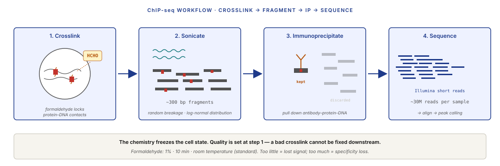
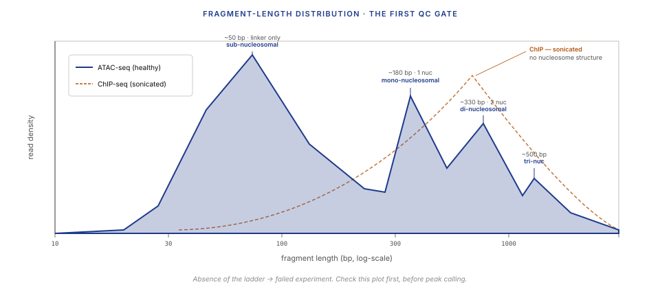
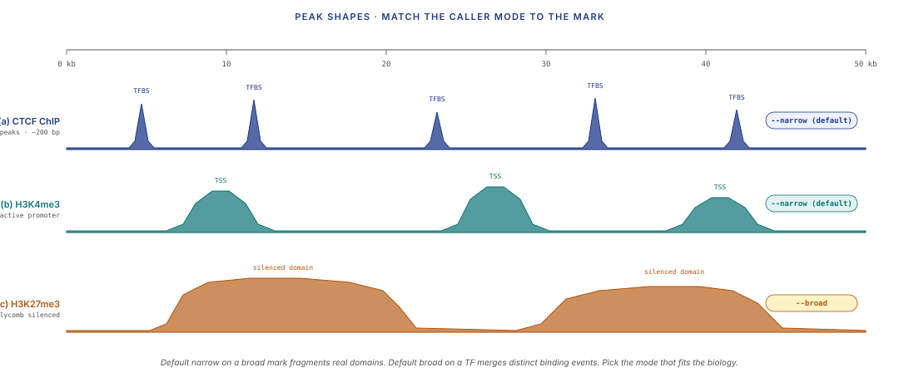
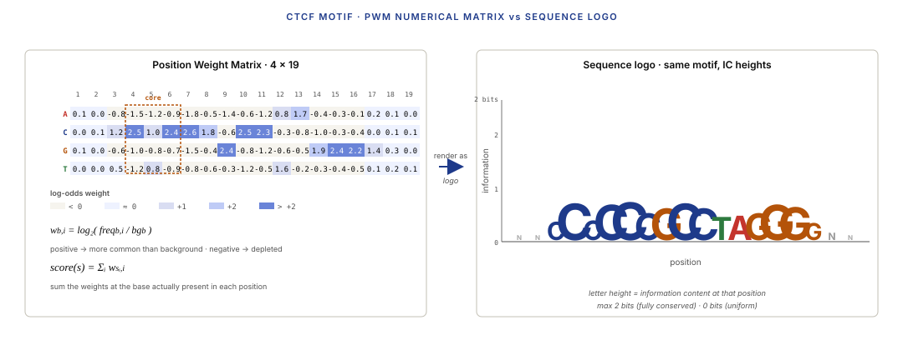

Five moves: read the pile-up, detect above local noise, test what changed, match the motif, let the CNN learn it.
Learning objectives
- Explain what ChIP-seq and ATAC-seq measure, and name the biological question each answers that DNA- and RNA-level assays cannot.
- Sketch the ChIP-seq chemistry end-to-end (crosslink → sonicate → immunoprecipitate → sequence) and the ATAC-seq chemistry end-to-end (Tn5 transposition → size-selected fragments → sequence).
- Read an ATAC-seq fragment-length distribution and identify the sub-, mono-, di-, and tri-nucleosomal peaks.
- Describe MACS2's peak-calling algorithm as local-Poisson detection, derive the local-background lambda estimator, and relate it to CFAR detection in radar.
- Distinguish narrow-peak from broad-peak calling strategies, and pick the right one for TF ChIP, histone-mark ChIP, and ATAC-seq.
- Test a peakset for differentially bound or accessible regions using the L6 negative-binomial GLM toolkit.
- Read a PWM, scan a DNA sequence as a matched-filter problem, and describe the JASPAR / CIS-BP databases.
- Explain ATAC footprinting as an inverse problem from coverage troughs, aggregated over many TF-motif instances.
- Name two ways modern deep learning predicts regulatory landscapes from DNA sequence (Enformer, Borzoi) and state one thing they do that MACS2 cannot.
Part 1 · 25 min What ChIP-seq and ATAC-seq Measure
1.1 The regulation question
Lectures 1–4 covered DNA sequence: where the letters are, where they differ between samples, and which differences are real. Lectures 5–8 covered RNA: which parts of the genome are transcribed, how much, and in which cell types.
Neither answers a third question: why is a gene transcribed in one cell type and not another? The DNA sequence is identical across almost every cell in a body; the expression program is not. Something between genome and transcriptome is controlling which genes are on, and that something is regulation: transcription factors binding to DNA, chromatin opening and closing, epigenetic marks being written and erased.
Regulation lives in a different data modality than sequence or transcription. To see it, we need assays that measure binding and accessibility directly:
- ChIP-seq (Chromatin ImmunoPrecipitation sequencing) measures where a specific protein binds DNA — any protein with a good antibody.
- ATAC-seq (Assay for Transposase-Accessible Chromatin sequencing) measures where DNA is accessible — unwrapped from nucleosomes, available for TFs to read.
- DNase-seq (older, similar spirit) measures accessibility via DNaseI digestion instead of transposition.
Both ChIP and ATAC produce sequencing reads that pile up at regulatory sites. The analysis task: find the pile-ups, compare them across conditions, and interpret them mechanistically.
1.2 ChIP-seq — where proteins bind DNA
A ChIP-seq experiment starts with a cell population and an antibody that recognises a specific protein target. The target is most commonly:
- A transcription factor (TF) — e.g. CTCF, TP53, FOXA1. The readout: TF binding locations across the genome.
- A histone mark — specific chemical modifications to histone proteins, e.g. H3K4me3 (trimethylation of lysine 4 on histone H3 → active promoters), H3K27ac (active enhancers), H3K27me3 (silenced regions), H3K9me3 (heterochromatin). The readout: where that mark decorates the genome.
- A chromatin remodeler or RNA polymerase II or anything else with a good antibody.
The chemistry:
- Crosslink. Treat cells with formaldehyde. This covalently locks proteins to the DNA they are currently touching — a snapshot of the protein-DNA contact map in that cell state.
- Fragment. Break the cross-linked chromatin into ~200–500 bp fragments by sonication (or by MNase digestion for an alternative called MNase-ChIP).
- Immunoprecipitate. Mix with the specific antibody; pull down antibody-protein-DNA complexes; discard everything else.
- Reverse crosslinks, purify DNA, sequence. The fragments that survive the pull-down came from genomic regions bound by your target protein. Sequencing them shows where.
![Side-by-side comparison. Left panel: ChIP-seq schematic showing crosslinked chromatin being fragmented and pulled down by an antibody specific to a TF or histone mark; surviving fragments are sequenced and reads pile up at bound sites. Right panel: ATAC-seq schematic showing Tn5 transposase inserting sequencing adapters preferentially into open chromatin regions; reads pile up at accessible sites. Below both, a shared cartoon genomic region with nucleosomes, TF binding sites, and open stretches, aligned to the coverage signal each assay produces.](../diagrams/lecture-09/01-chip-vs-atac-overview.svg)

1.3 ATAC-seq and DNase-seq — where chromatin is open
ChIP-seq needs a target and an antibody. What if you want a map of all regulatory activity in a tissue without knowing which TFs to ask about?
ATAC-seq (Buenrostro et al. 2013) solved this with a clever chemistry trick. The Tn5 transposase (from the prokaryotic Tn5 transposon) cuts DNA and inserts a payload in a single step. If you load Tn5 with sequencing adapters as its payload and put it on live chromatin, it inserts adapters into wherever it can physically access the DNA — which is only the open, nucleosome-free regions.
The result: short library fragments come out pre-tagged with sequencing adapters, from exactly the open regions. One assay, one enzyme, no antibody needed. The protocol runs from ~50,000 cells in under 4 hours. It transformed epigenomics.
The older analog is DNase-seq — instead of Tn5, DNaseI endonuclease preferentially cuts open chromatin. Same output, older, more input DNA required. Most 2024 work uses ATAC.
What ATAC tells you:
- Where open regulatory regions live — promoters, enhancers, insulator sites.
- Where nucleosomes are positioned — short sub-nucleosomal fragments (< 100 bp) come from accessible linker DNA; mono-nucleosomal (~150 bp) from single-nucleosome-bounded fragments; di-nucleosomal (~300 bp) from two-nucleosome spans. The fragment-length distribution is its own signal (Part 2).
- Regulatory landscape in rare cell types — via single-cell ATAC (introduced in L8 §4.2).
What ATAC doesn't tell you: which TF is bound in an open region. Only that the region is open. Motif analysis (Part 5) bridges the gap.
Single-cell ATAC (callback to L8 §4.2). The same Tn5 chemistry runs at per-cell resolution in droplet scATAC-seq and 10x Multiome (RNA + ATAC on the same nucleus). The data is much sparser — roughly 10,000 fragments per cell vs. ~30 million reads per bulk sample — and dimensionality reduction uses LSI (a TF-IDF-weighted SVD borrowed from text retrieval) instead of the PCA from Lecture 7. But the peak-calling framing in Part 3 largely transfers: you aggregate per-cell fragments into a pseudo-bulk track per cluster, then call peaks as though it were bulk. Everything downstream — differential accessibility (Part 4), motif scanning (Part 5), footprinting (Part 5 with deep-enough aggregate) — runs on the pseudo-bulks.
Part 2 · 35 min Library Prep, Biases, and Alignment
2.1 Crosslinking, sonication, Tn5 transposition
The wet-lab mechanics matter because each step shapes what the analysis sees.
Formaldehyde crosslinking (ChIP-seq). Formaldehyde (HCHO) reacts with primary amines on proteins and with N7 on adenine/guanine in DNA, forming short covalent bonds (~2 Å range). 1% formaldehyde for 10 min at room temperature is standard. Too little: crosslinks don't hold and the IP loses binding information. Too much: you crosslink everything to everything and lose specificity. The concentration and time are part of the protocol; papers report them explicitly.
Sonication. Physical breakage of cross-linked chromatin into small fragments using ultrasound. Typical settings produce a distribution centred ~300 bp, with a long tail. Sonication is biased — it preferentially breaks at nucleosome-free regions, subtly depleting fragments from highly packaged heterochromatin. Bioanalyzer traces show the size distribution; the protocol is tuned until the mode sits at the right length.
Tn5 transposition (ATAC-seq). Tn5 is a prokaryotic transposase. In its native role, it cleaves DNA at its recognition sequence and inserts a transposon. For ATAC-seq, Tn5 is pre-loaded with sequencing adapters and applied to a cell's chromatin. It inserts adapters wherever it can physically access the DNA.
Tn5 has a subtle sequence preference — it cuts slightly more often at certain ~9-bp motifs than at others. This means the raw cut-site distribution is not uniform even in fully open chromatin. Correction tools (TOBIAS — Part 5, TFBSTools, HINT-ATAC) deconvolve the Tn5 sequence bias before calling footprints.
2.2 Fragment-length distributions and sequence biases
Both assays produce libraries with characteristic fragment-length distributions. Looking at the distribution is the first QC step.
ChIP-seq fragments: roughly log-normal around the sonication target (~300 bp), with no nucleosomal structure because sonication randomises the breakage points.
ATAC-seq fragments: strikingly multi-modal, with peaks at:
- < 100 bp: sub-nucleosomal fragments from accessible linker DNA. These are the "nucleosome-free" signal.
- 150–180 bp: mono-nucleosomal fragments — the two Tn5 cut sites span exactly one nucleosome (nucleosomes are ~147 bp of DNA wrapped around a histone octamer, plus ~20 bp linker on each side).
- ~300 bp: di-nucleosomal — two adjacent nucleosomes.
- ~450 bp: tri-nucleosomal, fainter.
This laddering is a signature of well-performed ATAC-seq. Absence of the pattern = bad experiment (too much or too little Tn5, degraded cells, wrong size selection).
![Chromatin cartoon with six beige-grey nucleosomes spaced along a DNA line; between them, short linker stretches of open DNA and one larger promoter-scale open region. Tn5 transposase enzymes drawn as teal blobs insert sequencing adapters only in the accessible linker regions, not through nucleosomes. Output fragment classes listed below: sub-nucleosomal (under 100 bp, zero nucleosomes spanned), mono-nucleosomal (150 to 180 bp, spans one nucleosome), di-nucleosomal (around 300 bp, spans two), tri-nucleosomal (around 500 bp, rare).](../diagrams/lecture-09/03-atac-tn5.svg)

2.3 Alignment quirks
Alignment is mostly a callback to Lecture 2: BWA or Bowtie2 on the paired-end reads, expecting most reads to map uniquely. Two ChIP-and-ATAC-specific wrinkles:
ATAC-specific Tn5 offset correction. Tn5 inserts adapters as a dimer, producing a +4 / −5 staggered cut on the two strands. The 5' end of a + strand read maps 4 bp after the cut site; the 5' end of a − strand read maps 5 bp before the cut site. To recover the exact Tn5 cut position, shift forward-strand reads +4 bp and reverse-strand reads −5 bp before building the cut-site pile-up. Most ATAC pipelines (e.g. ENCODE) apply this shift routinely. Skipping it blurs footprint analyses by ~9 bp.
Blacklist regions. Some parts of the genome produce artifactual high coverage no matter what assay you run — rRNA gene clusters, telomeric / centromeric repeats, regions with annotation errors. These regions systematically produce false-positive peaks in ChIP-seq and ATAC-seq. The ENCODE Blacklist (Amemiya et al. 2019) is a curated set of ~400 regions in GRCh38 that every analysis should exclude before peak calling.
PCR duplicates. Illumina libraries involve PCR amplification; duplicate fragments from the same pre-amplification template should be collapsed (same as the UMI logic from L7, but for ChIP/ATAC you usually don't have UMIs — use position + fragment length as a duplicate key).
Shifting of paired-end vs single-end reads. Some peak callers (MACS2, MACS3) expect you to report fragment length for proper peak modeling. Paired-end reads give it directly; single-end reads require either a separate fragment-size estimation step (cross-correlation analysis, e.g. from SPP) or a configured default.
Part 3 · 60 min Peak Calling as Detection
3.1 The detection problem
Suppose you align a ChIP-seq experiment for CTCF. You now have ~30 million reads distributed across the 3-gigabase human genome. Some regions have a strong pile-up (dozens of reads in a 200-bp window); most of the genome has ~0 reads per window.
The peak-calling task: given the per-position read count across the genome, declare which windows contain a real signal (a genuine CTCF binding event) and which are background noise.
This is textbook detection theory — decide between two hypotheses at every location:
- $H_0$ (null): no binding; the coverage at this position is background noise.
- $H_1$ (alternative): binding event present; the coverage is background + signal.
The signal-to-noise ratio is high in ChIP-seq (a real binding site often has 5–20× the local background count), but the genome is 3 billion positions long, so even rare false alarms — 1 in 10⁵ — produce tens of thousands of spurious peaks. Multiple testing is not optional.

3.2 MACS2 — the algorithm
MACS2 (Model-based Analysis of ChIP-Seq, v2 — Zhang et al. 2008, Feng et al. 2012) is the de facto standard. Its core algorithm:
- Build a signal track. Extend each read by the estimated fragment length; compute per-position fragment coverage.
- Slide a test window. For each 200-bp window, count the fragments with summits inside it. Call this the observed count $c$.
- Estimate a local background rate $\lambda_{\text{local}}$. Use the maximum of several local background estimates:
- $\lambda_{\text{bg}}$: genome-wide average count per 200 bp window.
- $\lambda_{1000}$: average count in a surrounding 1 kb window.
- $\lambda_{5000}$: 5 kb.
- $\lambda_{10000}$: 10 kb.
- (If input/control data is available, $\lambda_{\text{input}}$: equivalent count in matched control.)
- Compute a Poisson p-value. Under $H_0$, the count $c$ follows $\text{Poisson}(\lambda_{\text{local}})$. P-value is $P(X \geq c \mid \lambda_{\text{local}})$.
- Multi-test correction. Apply Benjamini-Hochberg across all candidate peaks (callback to Lecture 6 §4) to control FDR at 5% (the default).
- Merge adjacent significant windows into a single peak; estimate the peak summit as the position of maximum coverage within the merged region.
The cleverness is in step 3 — using the maximum of several local averages is robust to both local depletion (real biology) and local enrichment (artefacts like blacklisted regions). It's also implicitly CFAR-like: the threshold adapts to local conditions.
![Three-column algorithmic schematic. Column 1: a coverage track section with a candidate 200 bp window marked with observed count c = 24. Column 2: same track with nested larger windows (1 kb, 5 kb, 10 kb) around the candidate, each labelled with its per-200bp lambda estimate (0.5 genome-wide, 2.1 at 1 kb, 3.8 at 5 kb, 2.9 at 10 kb, 1.2 input control); footer text shows lambda_local equals the max of these equals 3.8. Column 3: a Poisson PMF histogram at lambda = 3.8 with the candidate count c = 24 marked on the far right tail; text 'P(X ≥ 24 | λ = 3.8) = 2.4e-14 → reject H_0'. Arrows between columns show the algorithmic flow.](../diagrams/lecture-09/06-macs2-local-poisson.svg)
3.3 Local vs global background
Why the local-adaptive $\lambda$? Because biology and technology both violate the uniform-background assumption.
Biological non-uniformity. Some genomic regions have systematically higher coverage than others. Open chromatin is generally more accessible to any process, so ATAC-seq has extra reads there. Highly expressed genes are more accessible and often more bound. Without local adaptation, the global $\lambda$ under-represents the true background around real hotspots → false positive inflation near real signal.
Technical non-uniformity. Mappability varies (regions with many repeats have fewer uniquely-mappable reads → artifactually lower coverage); GC content affects library efficiency; blacklist regions (Part 2) have pathological pile-ups.
The CFAR solution. Re-estimate the noise floor locally. The local $\lambda$ averages 1 kb — 10 kb around each candidate, so whatever's elevating the baseline (real biology or artefact) is absorbed into the null distribution. A peak has to rise above the local noise, not just the global average.
This is the central idea. Once you see it, peak calling is no longer mysterious.

3.4 Narrow vs broad peak modes
Narrow-peak mode (MACS2 default). The algorithm described above. Output: sharp, ~100–500 bp peaks. Right for:
- TF ChIP-seq (CTCF, p53, ER, most TFs).
- H3K4me3 (active promoter mark — narrowish).
- H3K27ac (active enhancer mark — narrowish).
- ATAC-seq.
Broad-peak mode (MACS2 --broad). Uses two thresholds: a strict one to find core regions, a more permissive secondary one to extend/merge into larger domains. Output: domain-scale peaks, possibly tens of kilobases wide. Right for:
- H3K27me3 (Polycomb silenced — domain-scale).
- H3K9me3 (heterochromatin — domain-scale).
- H3K36me3 (gene-body mark — covers whole transcribed regions).
Superpeak / super-enhancer analysis (Whyte et al. 2013). A post-processing step on H3K27ac peaks — merge nearby peaks that together span >10 kb of the genome and call the merged region a "super-enhancer". Marks master-regulatory enhancers of cell-type identity. Tools: ROSE (Rank Ordering of Super-Enhancers).
Choosing the right mode matters. Default narrow on a broad mark fragments real domains; default broad on a TF-ChIP over-merges distinct binding events into spurious megapeaks.
Part 4 · 30 min Differential Binding and Accessibility
4.1 The DB / DA problem
You ran ChIP-seq (or ATAC-seq) on two conditions — control vs treated, wild-type vs knockout, normal vs cancer. Same antibody, same protocol, two biological conditions. You want to know which peaks changed between conditions.
The analysis template, identical in structure to Lecture 6's differential expression:
- Call peaks separately in each sample (MACS2 per sample), or on pooled reads across all samples.
- Build a consensus peakset: the union of peaks across all samples, or peaks seen in at least N samples.
- For each peak × each sample, count reads that overlap. Produces a peaks × samples count matrix — the same shape as a genes × samples matrix from L6.
- Fit a negative-binomial GLM (DESeq2, edgeR). Test each peak for differential count between conditions. Apply BH correction.
Step 4 is literally a callback to Lecture 6. The count-based DE toolkit works here because the noise model is the same: integer counts with overdispersion, per-feature, across a few dozen samples at most.
![MA scatter plot. X-axis: mean log2 count across samples, 0 to 16. Y-axis: log2 fold change between conditions, minus 5 to plus 5, with zero marked. A cloud of grey points sits around zero at moderate x. A cluster of red dots at positive y (gained accessibility) and a cluster of blue dots at negative y (lost accessibility) both concentrated in the x range 8 to 12. Dashed threshold lines at y equals plus or minus 1. Two peaks are highlighted with callouts: 'ENH1 near GENE_A (up 3.2×)' and 'PROM2 near GENE_B (down 2.1×)'.](../diagrams/lecture-09/08-differential-accessibility.svg)
4.2 DiffBind, csaw, and counts across conditions
Two R packages dominate:
DiffBind (Stark & Brown 2011, Ross-Innes et al. 2012). Takes a set of peak files and BAM files; builds the consensus peakset; counts reads per peak per sample; hands off to DESeq2 or edgeR for the statistical test. The wrapper handles the ChIP/ATAC-specific concerns (consensus peakset construction, normalisation choice). Default choice for most labs.
csaw (Lun & Smyth 2014, 2016). Alternative approach — window-based rather than peak-based. Tile the genome into overlapping windows; count reads per window per sample; run the DE test on windows; merge significant adjacent windows into differential regions after the test. Avoids the consensus-peakset decision that DiffBind has to make. Higher resolution, more sensitive for broad marks.
The normalisation question. Unlike RNA-seq (where you can assume most genes aren't differentially expressed, justifying median-of-ratios), ChIP/ATAC doesn't have that assumption — a whole-genome shift between conditions (e.g. global loss of H3K27ac in a knockout) is biologically real and should not be normalised away. DiffBind offers several options: library-size scaling (simplest), TMM (edgeR's default, assumes most peaks unchanged), or spike-in normalisation (requires an added reference species' chromatin). Choose based on whether you expect global shifts.
4.3 Gotchas — peakset choice and replicates
Consensus peakset choice biases the test. If you define the consensus as "peaks called in ≥50% of samples," peaks specific to one treatment condition get dropped before the DE test — a severe under-power. If you define as "peaks in any sample," you include noisy single-sample calls and add false positives. Best practice: consensus = peaks called in ≥N samples where N is about half the sample count per condition; or use csaw's window approach to avoid the issue entirely.
Replicate count. ChIP/ATAC experiments typically use 2–3 biological replicates per condition. DESeq2/edgeR work down to 2 replicates per group but with much less power than the 5–10 replicate comparisons seen in transcriptomics. Statistics cannot compensate for biology; if the effect needs 5 replicates per arm, use 5.
Part 5 · 35 min Motifs, Matched Filters, and Footprinting
5.1 TF binding motifs and the PWM
A transcription factor binds DNA with sequence specificity — it prefers some 8–20 bp sequences over others. But real binding is not a single consensus sequence; it's a distribution over sequences. A TF that mostly likes TGACTCA (AP-1) will also bind TGAGTCA or TGACTCT with lower affinity. The binding specificity is fractional, not binary.
The standard representation is a Position Weight Matrix (PWM):
- 4 rows (A, C, G, T) × L columns (motif length, typically 6–20 bp).
- Entry $w_{b, i}$ = log of (observed frequency of base $b$ at position $i$) / (background frequency of $b$). Typically computed from hundreds of known binding sites.
Scoring a candidate sequence $s_1 s_2 \ldots s_L$ against a PWM:
$$\text{score}(s) = \sum_{i=1}^{L} w_{s_i, i}$$
Higher score = better match to the TF's binding preference. The score is essentially a log-odds ratio — how much more likely is this sequence to be generated by the TF's binding model than by random background.

5.2 Motif databases
Hand-curating PWMs for every TF is expensive. Two community databases collect them:
JASPAR (Castro-Mondragon et al. 2022, current version JASPAR 2024). ~2000 curated PWMs across hundreds of vertebrates. Each motif tagged with its TF family, validation source (ChIP-seq, PBM, SELEX), and provenance. The default first-pass database for human and mouse motif scanning.
CIS-BP (Weirauch et al. 2014, expanded 2022). ~5000 TF motifs across 300+ species. Denser than JASPAR because it predicts motifs computationally for TFs without direct experimental data (via homology to TFs with known motifs in the same DNA-binding family). Useful when JASPAR has no motif for your TF.
HOCOMOCO (Kulakovskiy et al. 2024). ~800 human / mouse motifs, each carefully curated from ChIP-seq data across many experiments. Higher-quality but fewer TFs than JASPAR.
Usage pattern: pick a database, get a PWM for the TF of interest, scan your sequence for hits.
5.3 Motif scanning as a matched filter
Given a PWM and a DNA sequence (say, a 10 kb region around an ATAC peak), find the positions where the motif is likely to be bound.
Scanning algorithm:
- Slide the PWM along the sequence.
- At each position $i$, compute $\text{score}(s_i s_{i+1} \ldots s_{i+L-1})$ against the PWM.
- Report positions where the score exceeds a threshold (typically calibrated to a per-base p-value of $10^{-4}$).
Scan both strands (reverse-complement the sequence, or equivalently flip and complement the PWM).
Typical tools: FIMO (in the MEME suite), pwm_scan (in several bioconductor packages), MOODS. They differ in threshold calibration and speed; algorithmically all do the same thing.
![Three horizontally aligned bands. Top: the 4-channel PWM template, 4 rows by L columns, each cell coloured by its weight. Middle: a DNA sequence rendered as a 4-channel one-hot signal — 4 rows by 60 columns, with exactly one cell 'hot' per column (coloured by base identity); a few positions annotated with the corresponding nucleotide letter. Bottom: the sliding-window PWM score output as a 1D track, mostly flat-low with a clear spike at one position where the sequence matches the template; annotated 'hit: score = 18.3, p < 1e-4'. A dashed-box sliding window drawn at three template positions along the signal, with thin arrows from template-positions to output-values.](../diagrams/lecture-09/10-matched-filter.svg)
5.4 ATAC footprinting
A TF physically bound to DNA protects a ~20 bp stretch from Tn5 insertion — the transposase can't reach the DNA because a protein is in the way. In a ChIP-seq experiment you only know the TF is somewhere in a ~200 bp peak. In an ATAC-seq experiment, if coverage is deep enough, you can see the footprint: a local drop in Tn5 cuts at the exact binding site, flanked by normal open-chromatin cuts on either side.
Per-individual-TF-site the footprint is usually too noisy to see. The trick: aggregate over many instances of the same motif. Pool the Tn5 cut counts at every position relative to the motif centre, across thousands of motif instances. Random noise averages out; the systematic footprint signal accumulates.
![Central panel: a curve showing Tn5 cut density (y) vs position relative to motif centre (x, -200 to +200 bp). Clear shape with elevated flanking shoulders around 2× baseline and a prominent 20 bp-wide dip at the motif centre dropping to about 0.3× baseline. Labelled 'aggregated over 5,000 CTCF motif instances'. Side panel: 5 small stacked sub-plots showing noisy individual-instance cut-count traces; each looks essentially random with no clear dip visible. An arrow between them labelled 'sum over N sites → SNR × √N'.](../diagrams/lecture-09/11-atac-footprint.svg)
Tools: TOBIAS (Bentsen et al. 2020), HINT-ATAC (Li et al. 2019), BaGFoot (Baek et al. 2017). All implement the same aggregation idea with different bias corrections and statistical thresholds.
Part 6 · 15 min Sequence-to-Regulation Models
6.1 Enformer and its siblings
Everything up to this point in Lecture 9 is measurement-driven: run an assay, observe the data, call peaks or footprints. A different paradigm has emerged: predict regulatory landscapes directly from DNA sequence, without running the experiment.
Enformer (Avsec, Agarwal et al. 2021, DeepMind + Calico). A CNN + transformer hybrid that takes a ~100 kb DNA sequence and predicts thousands of regulatory outputs: CAGE signal at every position (proxy for TSS activity), ATAC / DNase accessibility, ChIP-seq signal for many TFs and histone marks. Trained on all publicly available ENCODE / Roadmap / FANTOM regulatory data. Performance: within ~15% of experimental replicate reproducibility for many marks — "as good as re-running the experiment" for a significant fraction of features.
Borzoi (Linder, Srivastava, Theis, Kelley 2023). Enformer's successor. Extended context (~500 kb), trained on more data including single-cell ATAC.
DeepSEA / ExPecto / Sei — earlier CNN-based models with the same goal but less architectural sophistication.
What the sequence-to-function models do that MACS2 can't:
- Predict assay output on sequences that have never been run (different species, synthetic sequences, personal genome variants).
- Score variant effects — compare model output for reference vs variant sequence to estimate the regulatory impact of a mutation.
- Capture long-range interactions — Enformer's 100 kb context lets it learn distal enhancer → promoter relationships from sequence alone.
What they still can't do well: predict accurately in cell types underrepresented in training data; predict rare cell-type-specific regulation; model cooperative-binding nonlinearities beyond what the architecture captures.
![Left-to-right schematic of the Enformer architecture. Input: a 100 kb DNA strand shown as a 200K base by 4 channel one-hot representation with a short highlighted stretch of visible bases. CNN block: three stacked rectangles labelled 'conv + ReLU' with arrows showing downsampling from 1 bp resolution to 128 bp bins; output label 'local sequence features'. Transformer block: three stacked boxes labelled 'transformer layer (self-attention)' with arrows; output 'long-range contextualised features'. Output heads: parallel branches labelled 'CAGE (5000 tracks)', 'DNase/ATAC (~700 tracks)', 'TF ChIP (~4000 tracks)', 'histone marks (~2000 tracks)'; output representation is per 128 bp bin signal prediction.](../diagrams/lecture-09/12-enformer-architecture.svg)
6.2 Forward pointer to Lecture 16
Sequence-to-function models are one example of a broader pattern that Lecture 16 will synthesize: deep learning architectures matched to genomic problem structure. The pattern so far:
- DeepVariant (L4): CNN on pileups — pileups are image-like; CNNs win.
- scVI / totalVI (L8): VAE with NB likelihood — sparse counts; VAE + count-appropriate likelihood wins.
- Enformer / Borzoi (L9): CNN + transformer on sequence — long-range interactions matter; transformer wins for the global structure, CNN for the local motifs.
Each architecture is matched to the inductive biases of the problem. Lecture 16 pulls these patterns out explicitly.
Wrap-up · 10 min Takeaways, homework, and next lecture
What you should take away
- ChIP-seq measures protein-DNA binding. ATAC-seq measures chromatin accessibility. Both produce read pile-ups at regulatory regions; peak calling turns pile-ups into a list of regulatory intervals.
- Library chemistry shapes the downstream signal. ATAC's Tn5 gives you a fragment-length distribution with characteristic nucleosome laddering — your first QC gate. ChIP's sonication gives you a flat ~300 bp mode. Bias correction matters for footprinting; it matters less for peak calling.
- Peak calling is detection theory. MACS2 is a CFAR detector: count at candidate position vs Poisson null estimated from local windows. The local-adaptive background is what makes it work. Narrow peaks for TFs; broad peaks for H3K27me3 / H3K9me3-class marks.
- Differential binding is Lecture 6 on a different feature set. Same negative-binomial GLM, same dispersion shrinkage, same BH — on peaks × samples instead of genes × samples. DiffBind / csaw are the standard wrappers.
- Motif scanning is matched filtering. PWMs are 4-channel templates; scanning is discrete correlation of template against one-hot sequence. Thresholds trade sensitivity against false positives. Motif hit ≠ binding.
- ATAC footprinting is signal-averaging over many TF-motif instances. Aggregation over thousands of sites reveals the coverage trough at the protected binding centre. SNR scales as √N.
- Deep learning predicts regulatory output from sequence. Enformer, Borzoi — CNN + transformer architectures trained on ENCODE-scale data. Useful for variant effect prediction and cross-species transfer; less useful for uncommon cell types.
Next lecture
Methylation, Hi-C, and 3D genome organisation. Bisulfite sequencing as alignment-with-a-known-channel-flip; Hi-C contact maps as correlation matrices; TADs and A/B compartments as eigendecomposition + change-point detection.
Homework
- Run MACS2 in narrow and broad mode on the ENCODE K562 CTCF ChIP-seq dataset. Compare the number, median width, and top-peak locations of the two outputs. Which mode fits CTCF biology?
- Compute the fragment-length distribution of an ATAC-seq sample from ENCODE (e.g. GM12878). Annotate the sub / mono / di / tri nucleosomal peaks. Report the ratio of sub-nucleosomal to mono-nucleosomal fragments; this ratio varies by cell type and is informative.
- Download two matched ATAC-seq conditions (e.g. control vs LPS-stimulated macrophages from GEO). Call a consensus peakset; build a counts matrix; run DiffBind or csaw; report: how many peaks change, what the top-10 gained / lost peaks are, which genes they fall near.
- Pick a TF with a JASPAR motif (e.g. CTCF, MA0139.1). Scan a 100 kb region around a gene you're interested in for hits at p < 10⁻⁴. How many hits in open-chromatin regions vs closed? Hit count vs actual ChIP peaks — what's the false-positive rate?
- Pick a TF with a clear footprint (CTCF is the canonical example). Run TOBIAS or HINT-ATAC on an ATAC-seq sample. Verify: is there a visible footprint at the motif centre? How does footprint depth correlate with local ATAC signal?
Recommended reading
- Barski, A., Cuddapah, S., Cui, K., et al. (2007). High-resolution profiling of histone methylations in the human genome. Cell 129, 823–837. (Early ChIP-seq.)
- Buenrostro, J. D., Giresi, P. G., Zaba, L. C., Chang, H. Y., & Greenleaf, W. J. (2013). Transposition of native chromatin for fast and sensitive epigenomic profiling of open chromatin, DNA-binding proteins and nucleosome position. Nature Methods 10, 1213–1218. (The ATAC-seq paper.)
- Zhang, Y., Liu, T., Meyer, C. A., et al. (2008). Model-based analysis of ChIP-Seq (MACS). Genome Biology 9, R137.
- Feng, J., Liu, T., Qin, B., Zhang, Y., & Liu, X. S. (2012). Identifying ChIP-seq enrichment using MACS. Nature Protocols 7, 1728–1740.
- ENCODE Project Consortium (2012). An integrated encyclopedia of DNA elements in the human genome. Nature 489, 57–74.
- Amemiya, H. M., Kundaje, A., & Boyle, A. P. (2019). The ENCODE blacklist: identification of problematic regions of the genome. Scientific Reports 9, 9354.
- Ross-Innes, C. S., Stark, R., Teschendorff, A. E., et al. (2012). Differential oestrogen receptor binding is associated with clinical outcome in breast cancer. Nature 481, 389–393.
- Lun, A. T. L., & Smyth, G. K. (2016). csaw: a Bioconductor package for differential binding analysis of ChIP-seq data using sliding windows. Nucleic Acids Research 44, e45.
- Castro-Mondragon, J. A., Riudavets-Puig, R., Rauluseviciute, I., et al. (2022). JASPAR 2022: the 9th release of the open-access database of transcription factor binding profiles. Nucleic Acids Research 50, D165–D173.
- Bentsen, M., Goymann, P., Schultheis, H., et al. (2020). ATAC-seq footprinting unravels kinetics of transcription factor binding during zygotic genome activation. Nature Communications 11, 4267. (TOBIAS paper.)
- Avsec, Ž., Agarwal, V., Visentin, D., et al. (2021). Effective gene expression prediction from sequence by integrating long-range interactions. Nature Methods 18, 1196–1203.
- MACS3 documentation: macs3-project.github.io/MACS
- TOBIAS tutorial: github.molgen.mpg.de/loosolab/TOBIAS
- JASPAR database: jaspar.genereg.net
Appendix — timing summary
| Block | Time | Cumulative |
|---|---|---|
| Part 1 — What ChIP-seq and ATAC-seq Measure | 25 min | 0:25 |
| Part 2 — Library Prep, Biases, and Alignment | 35 min | 1:00 |
| Part 3 — Peak Calling as Detection | 60 min | 2:00 |
| Part 4 — Differential Binding and Accessibility | 30 min | 2:30 |
| Part 5 — Motifs, Matched Filters, and Footprinting | 35 min | 3:05 |
| Part 6 — Sequence-to-Regulation Models | 15 min | 3:20 |
| Wrap-up | 10 min | 3:30 |
Total: ~3h 30min of content.